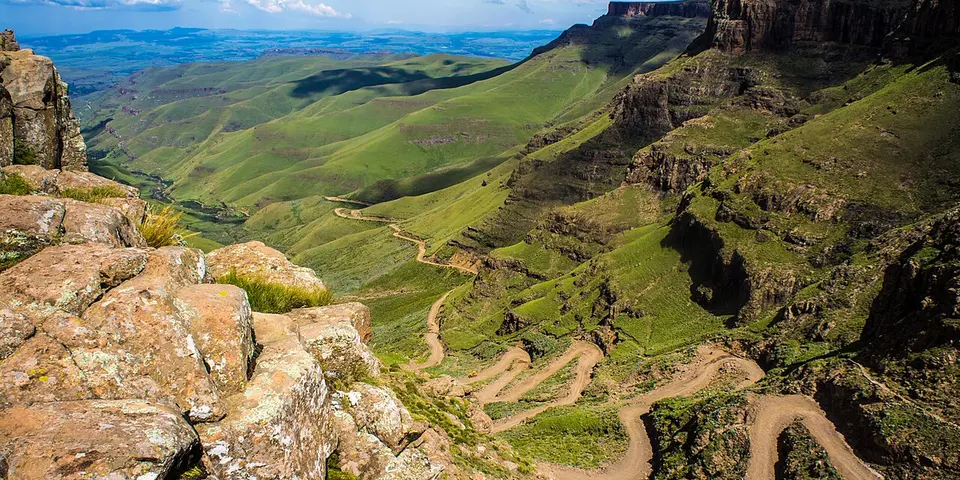

Sub-Saharan Africa
Lesotho on a budget
Lesotho is a mountain kingdom entirely above 1,000 m, with pony treks, village homestays, the Sani Pass and huge waterfalls, all surprisingly cheap to explore.
Photo: Vaiz Ha, CC BY 2.0, via Wikimedia Commons

Classic route
Sani Pass, Semonkong and Malealea. 1 week.
Before you go
Flights to Semonkong: Skyscanner · Kiwi.com · Google Flights
Hostels and guesthouses in Semonkong · Sani Pass · Malealea · Katse Dam
Tours and tickets: Semonkong · Sani Pass
Mobile data: Lesotho eSIM
Travel insurance: SafetyWing
How much 10 places in Lesotho cost
Daily budgets per person in US dollars: a hostel dorm or simple guesthouse, local food, local transport and the usual entry fees.
-
Semonkong
Maletsunyane Falls plunges into a deep gorge, and pony treks with Basotho guides wind between remote mountain villages.
Bed $15 · Food $8 · Getting around $5 · Extras $8
Budget tip: Lodges arrange pony treks and village stays. Bring warm layers, as nights get cold at altitude even in summer.
$36per day -
Sani Pass
A switchback 4x4 road climbs into the mountains to a summit pub billed as Africa's highest, with huge views over the valley.
Bed $20 · Food $10 · Getting around $15 · Extras $4
Budget tip: Join a 4x4 tour from Underberg in South Africa. Bring your passport, as you cross the border at the top.
$49per day -
Malealea
Pony treks, village hikes and waterfalls from a rustic mountain lodge, with sweeping views across the Maloti mountains.
Bed $15 · Food $8 · Getting around $5 · Extras $8
Budget tip: The lodge arranges cheap pony treks with local guides, and its campsite is the budget choice.
$36per day -
Katse Dam
A huge arched dam deep in the mountains, holding back a long, winding reservoir surrounded by high passes.
Bed $15 · Food $8 · Getting around $10 · Extras $3
Budget tip: The drive there is spectacular, so take your time. Dam tours are free or very cheap.
$36per day -
Thaba-Bosiu
The flat-topped mountain fortress where King Moshoeshoe I founded Lesotho, with royal graves and wide views.
Bed $15 · Food $8 · Getting around $4 · Extras $4
Budget tip: An easy day trip from Maseru by minibus. Hire a local guide to hear the history.
$31per day -
Morija
Historic mission village with the Morija Museum and Archives, dinosaur footprints nearby and the annual Morija Arts and Cultural Festival.
Bed $15 · Food $8 · Getting around $4 · Extras $4
Budget tip: Visit during the festival for music and food, and stay at the local guesthouse rather than in Maseru.
$31per day -
Maseru
Small capital on the Caledon River with the conical Basotho Hat craft shop, markets and the nearby Thaba-Bosiu plateau.
Bed $20 · Food $8 · Getting around $3 · Extras $3
Budget tip: Use the shared taxis from the main rank to save money, and buy blankets and crafts directly from local markets.
$34per day -
Ha Kome Cave Houses
Mud houses built into a sandstone overhang near Teyateyaneng, still lived in by descendants of the original Basia families.
Bed $15 · Food $8 · Getting around $6 · Extras $5
Budget tip: Hire a local guide at the site and bring small bills for the community fee; combine with Teyateyaneng's weaving workshops.
$34per day -
Ts'ehlanyane
A national park with rare indigenous forest, mountain streams and day hiking trails in the Maloti mountains.
Bed $15 · Food $8 · Getting around $8 · Extras $5
Budget tip: Camp in the park for the cheapest night. Minibuses go as far as Butha-Buthe.
$36per day -
Sehlabathebe
A remote high plateau of rock pools, sandstone arches and ancient San rock art, with almost no visitors.
Bed $15 · Food $8 · Getting around $10 · Extras $4
Budget tip: The road is rough; hike in from the South African side or use a 4x4.
$37per day
Know before you go
Lesotho on a budget: the basics
Currency
$1 = 16.65 LSL
Lesotho loti
| Dollars to LSL | LSL to dollars | ||
|---|---|---|---|
| $1 | 16.65 LSL | 10 LSL | $0.601 |
| $5 | 83.26 LSL | 50 LSL | $3.00 |
| $10 | 167 LSL | 100 LSL | $6.01 |
| $20 | 333 LSL | 500 LSL | $30.03 |
| $50 | 833 LSL | 1,000 LSL | $60.06 |
| $100 | 1,665 LSL | 5,000 LSL | $300 |
A typical day here (about $36) is roughly 600 LSL.
Mid-market rate on 2026-10-05. Cash machines and exchange desks pay a little less.
Getting around
Minibus taxis and buses run from Maseru to most towns, including Semonkong and Malealea, but they are slow on mountain roads. Sani Pass is usually done on a 4x4 tour from the South African side or in a high-clearance vehicle. Pony trekking from Malealea and Semonkong is a common way to see the highlands.
Where to sleep
Mountain lodges at Sani, Semonkong and Malealea offer dorms, rondavels and camping at budget prices. Winter nights are freezing, so check that rooms have heating or blankets.
What to eat
- Papa: stiff maize porridge, the daily staple
- Moroho: cooked greens like spinach or cabbage
- Joala: home-brewed sorghum beer, flagged by a white flag
- Maluti: the local lager, named after the mountains
Money
The loti is pegged to the rand, and rand is accepted everywhere. ATMs are in Maseru and larger towns, and many rural lodges take cash only; tipping guides is customary.
Phone data
Vodacom and Econet SIMs need passport registration, and coverage is good in towns but patchy in the high mountains.
Heads up
Weather in the highlands changes fast, and snow is common from June to August, so pack warm layers.
Lesotho travel: quick answers
How much does a day in Lesotho cost on a budget?
About $36 a day for one person, from $31 in Thaba-Bosiu to $49 in Sani Pass. That covers a hostel dorm or simple guesthouse, local food, local transport and the usual entry fees, so a week runs about $252 before flights.
When is the best time to visit Lesotho?
March to May and September to November is the best time, with the most reliable weather for getting around.
What is the cheapest place to visit in Lesotho?
Thaba-Bosiu, at about $31 a day. The flat-topped mountain fortress where King Moshoeshoe I founded Lesotho, with royal graves and wide views.
How long do you need in Lesotho?
Sani Pass, Semonkong and Malealea. 1 week.
How much is $1 in Lesotho?
One US dollar is about 16.65 Lesotho loti (LSL), going by the mid-market rate on 2026-10-05. So $20 is roughly 333 LSL, and a typical budget day of $36 comes to about 600 LSL.
How do you get around Lesotho cheaply?
Minibus taxis and buses run from Maseru to most towns, including Semonkong and Malealea, but they are slow on mountain roads. Sani Pass is usually done on a 4x4 tour from the South African side or in a high-clearance vehicle. Pony trekking from Malealea and Semonkong is a common way to see the highlands.
What food should you try in Lesotho?
Papa, stiff maize porridge, the daily staple. Moroho, cooked greens like spinach or cabbage. Joala, home-brewed sorghum beer, flagged by a white flag. Maluti, the local lager, named after the mountains.
Planning around the seasons? See where to go in March, or compare the cheapest countries nearby.
Similar budgets nearby
- Senegal $36/day
- Madagascar $35/day
- Kenya $37/day
- Uganda $37/day